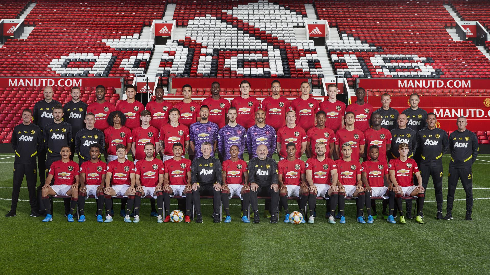

- 


welcome to my website
-I am an avid Sports fan, especially of sports like soccer and Rugby.
-I play for Avondale united Football club as a stricker, where we have found success in the priemership, even going as far as to represent Avondale in Barcelona.
-I also support Manchester United Football Club and the Republic of Ireland Football team, where i go to at least one game every year respectively.
-I Also support the Irish men's Rugby team, as my father played for the international team, representing Ireland in the First three world cups as a Hooker.
-I also play for Cork Constitution Rugby Club as a Hooker
-My other avid interest would be would be travel. I think it is important to open yourself up to other experiences and cultures.
-One of my favourite activities to do on holidays is skiing. i've been to Austria to go skiing in 2016 which was absolutely amazing
-I have been to amsterdam, a city which is filled with culture, such as the anne frank house, a plethrea of musueums and one of the greatest football arenas in the world
-This summer i will be interrailing around europe and will be traveling to Prague,Vienna,Budapest,bled,Amsterdam one again and Berlin. i'm very excited to see lake bled in Slovenia